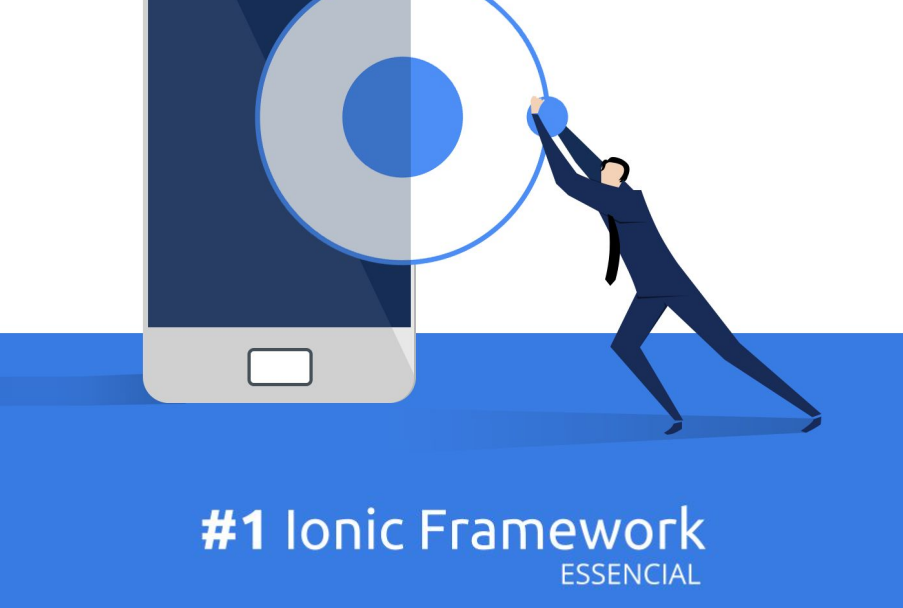

O desenvolvimento de aplicativos móveis já não é novidade e está bem consolidado em suas plataformas. Mas algumas discussões sempre ocorrem na hora de definir qual plataforma desenvolver, se você procura está reposta neste ebook não irá encontrar, pois são vários os fatores, e pontos de analise, que definem se você deve desenvolver nativo ou híbrido e vamos deixar essa discussão para um outro momento.
Este ebook é o primeiro de uma série de ebooks que irão abordar o Ionic Framework, neles você irá encontrar, de forma simples e objetiva, explicações, exemplos e muito código sobre o desenvolvimento de aplicativos móveis híbridos. Cada ebook irá abordar um tema específico, exceto este primeiro que é a base de aprendizado para os demais assuntos
Todos os ebooks elaborados por mim serão gratuitos, pois o objetivo central destes materiais é o compartilhamento de conhecimento e disseminação deste framework fantástico.
Público alvo
Este ebook foi escrito para você que está começando no mundo do desenvolvimento de aplicativos móveis e tem interesse em aprender sobre uma tecnologia híbrida. Não iremos abordar padrões de desenvolvimento e não vamos utilizar lógicas de programação complexas para facilitar o aprendizado e ter um público mais amplo, tendo em vista que iniciantes também no mundo da programação podem estar lendo este ebook.
Este material não deverá ser seu único ponto de referência e guia, pois existem outros ebooks, livros e blogs que falam sobre Ionic Framework e podem ampliar seu conhecimento.
Baixar Ebook: #1 Ionic Framework - Essencial.pdf
Tweet #ebookIonicFrameworkPtBr